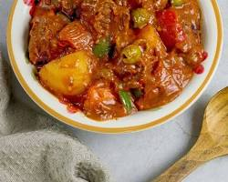

INGREDIENTS
- 1 kg (2.2 lb) beef chuck, cut into 1-inch cubes
- 1/4 cup olive oil
- 1 onion, chopped
- 5 cloves garlic, minced
- 1 tbsp tomato paste
- 1 (400 ml) can crushed tomatoes
- 1 liter beef broth
- 1/2 cup liver spread
- 1/4 cup soy sauce
- 1 bay leaf
- 1 tsp black peppercorns
- 1 carrot, peeled and diced
- 1 potato, peeled and diced
- 1 bell pepper (red, green, or yellow), sliced
- 1/2 cup green peas (frozen or fresh)
- Salt to taste
|

|
PROCEDURE
- Heat oil: In a large pot or Dutch oven, heat olive oil over medium heat.
- Brown the beef: Season the beef cubes with salt and pepper. Sear them in batches until browned on all sides. Remove from the pot and set aside.
- Sauté aromatics: Add the onion and garlic to the pot and cook until softened, about 5 minutes.
- Add tomato paste and cook: Stir in the tomato paste and cook for another minute, scraping up any browned bits from the bottom of the pot.
- Incorporate liquids: Pour in the crushed tomatoes and beef broth. Bring to a boil, then reduce heat to low and simmer for 15 minutes.
- Incorporate liquids: Pour in the crushed tomatoes and beef broth. Bring to a boil, then reduce heat to low and simmer for 15 minutes.
- Return beef: Add the browned beef back to the pot and simmer for another 30 minutes, or until the beef is tender.
- Add vegetables: Stir in the carrot, potato, and bell pepper. Simmer for 10 minutes, or until the vegetables are tender.
- Final touches: Add the green peas and simmer for another 5 minutes. Season with additional salt and pepper to taste.
- Serve: Turn off the heat and remove the bay leaf. Serve hot with steamed rice and enjoy!
|